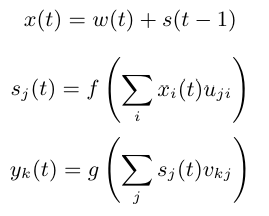

Réseau de neurones récurrents#
Dans ce cours, nous allons introduire les réseaux de neurones récurrents (RNN) dans le cadre de la prédiction du prochain caractère. Pour ce faire, nous allons nous baser sur l’architecture décrite dans le papier Recurrent neural network based language model qui présente une version basique de RNN pour la prédiction du prochain caractère.
La motivation derrière l’utilisation d’un RNN pour cette tâche est de ne pas avoir à spécifier une taille de contexte pour l’entraînement du modèle contrairement aux deux modèles basées sur des réseaux fully connected que nous avons vu dans les notebooks précédents.
Les RNN ont pour motivation de garder une information de contexte peu importe la longueur de la séquence. C’est une idée très intéressante sur le papier mais nous verrons, à la fin du cours, qu’il y a de grosses limitations.

Figure extraite de l’article original.
Fonctionnement de l’architecture RNN#
L’architecture de réseau de neurones récurrents se base sur une approche séquentielle. Les caractères vont être passés un par un dans le modèle et la valeur du caractère suivant dépend du state gardé en mémoire et de l’élément actuel. Le state contient les informations de contexte de tous les caractères précédents.
Posons le problème mathématiquement :
Un RNN est constitué de 3 éléments : l’input \(x\), le state (hidden layer) \(s\) et l’output \(y\). On introduit également le temps \(t\) qui rajoute la composante temporelle pour le traitement séquentiel.
\(x\) au temps \(t\) est alors défini comme :
\(x(t)=w(t) + s(t-1)\) où \(w()\) est l’opération de one_hot encoding et \(s(t-1)\) est le state au temps \(t-1\).
Et ensuite, on estime \(s(t)\) et \(y(t)\) :
\(s(t)=sigmoid(x(t))\)
\(y(t)=softmax(s(t))\)
On peut constater que ce modèle n’a en fait qu’un seul paramètre à ajuster : la dimension de la couche cachée \(s\).
Pour l’initialisation \(s(0)\) peut être initialisée en un vecteur de petite valeurs.
Implémentation#
import torch
import torch.nn as nn
Dataset#
Utiliser un RNN pour générer des prénoms n’est pas très intéressant car les prénoms ne sont jamais très longs et la taille de contexte est donc limitée. Pour ce type de tâches, il est intéressant d’utiliser un dataset avec un contexte conséquent.
Pour cela, nous utilisons un fichier texte moliere.txt qui regroupe l’intégralité des dialogues des pièces de Molière.
Ce dataset a été crée à partir des oeuvres complètes de Molière disponibles sur le site Gutenberg.org. J’ai nettoyé un peu les données afin de ne garder que les dialogues.
with open('moliere.txt', 'r', encoding='utf-8') as f:
text = f.read()
print("Nombre de caractères dans le dataset : ", len(text))
Nombre de caractères dans le dataset : 1687290
C’est un gros dataset donc pour avoir un temps de traitement raisonnables nous prenons uniquement une partie de ce dataset (par exemple les 50 000 premiers caractères).
text=text[:50000]
print("Nombre de caractères dans le dataset : ", len(text))
Nombre de caractères dans le dataset : 50000
Affichons les 250 premiers caractères.
print(text[:250])
VALÈRE.
Eh bien, Sabine, quel conseil me donnes-tu?
SABINE.
Vraiment, il y a bien des nouvelles. Mon oncle veut résolûment que ma
cousine épouse Villebrequin, et les affaires sont tellement avancées,
que je crois qu'ils eussent été mariés dès aujo
Regardons le nombre de caractères différents :
chars = sorted(list(set(text)))
vocab_size = len(chars)
print(''.join(chars))
print("Nombre de caractères différents : ", vocab_size)
!'(),-.:;?ABCDEFGHIJLMNOPQRSTUVYabcdefghijlmnopqrstuvxyzÇÈÉàâæçèéêîïôùû
Nombre de caractères différents : 73
Création d’un mapping de caractère à entiers et inversement
stoi = { ch:i for i,ch in enumerate(chars) }
itos = { i:ch for i,ch in enumerate(chars) }
encode = lambda s: [stoi[c] for c in s] # encode : prend un string et output une liste d'entiers
decode = lambda l: ''.join([itos[i] for i in l]) # decode: prend une liste d'entiers et output un string
Encodons notre dataset en convertissant les string en int puis en le transformant en tenseur pytorch.
data = torch.tensor(encode(text), dtype=torch.long)
print(data[:250]) # Les 250 premiers caractères encodé
tensor([32, 12, 22, 59, 28, 16, 8, 0, 0, 16, 41, 1, 35, 42, 38, 46, 6, 1,
29, 34, 35, 42, 46, 38, 6, 1, 49, 53, 38, 44, 1, 36, 47, 46, 51, 38,
42, 44, 1, 45, 38, 1, 37, 47, 46, 46, 38, 51, 7, 52, 53, 11, 0, 0,
29, 12, 13, 20, 24, 16, 8, 0, 0, 32, 50, 34, 42, 45, 38, 46, 52, 6,
1, 42, 44, 1, 56, 1, 34, 1, 35, 42, 38, 46, 1, 37, 38, 51, 1, 46,
47, 53, 54, 38, 44, 44, 38, 51, 8, 1, 23, 47, 46, 1, 47, 46, 36, 44,
38, 1, 54, 38, 53, 52, 1, 50, 66, 51, 47, 44, 72, 45, 38, 46, 52, 1,
49, 53, 38, 1, 45, 34, 0, 36, 47, 53, 51, 42, 46, 38, 1, 66, 48, 47,
53, 51, 38, 1, 32, 42, 44, 44, 38, 35, 50, 38, 49, 53, 42, 46, 6, 1,
38, 52, 1, 44, 38, 51, 1, 34, 39, 39, 34, 42, 50, 38, 51, 1, 51, 47,
46, 52, 1, 52, 38, 44, 44, 38, 45, 38, 46, 52, 1, 34, 54, 34, 46, 36,
66, 38, 51, 6, 0, 49, 53, 38, 1, 43, 38, 1, 36, 50, 47, 42, 51, 1,
49, 53, 3, 42, 44, 51, 1, 38, 53, 51, 51, 38, 46, 52, 1, 66, 52, 66,
1, 45, 34, 50, 42, 66, 51, 1, 37, 65, 51, 1, 34, 53, 43, 47])
On sépare training et test :
n = int(0.9*len(data)) # 90% pour le train et 10% pour le test
train_data = data[:n]
test = data[n:]
Note : Chaque itération de l’entraînement correspondra à un passage dans l’intégralité du dataset de manière séquentielle.
Création du modèle#
Il est maintenant temps de créer notre modèle !
Dans l’article, il est indiqué que l’entrée du modèle (le caractère) est encodé en one hot et qu’il est ensuite sommé avec le state à \(t-1\). On va donc avoir besoin de deux couches fully connected, la première pour transformer l’entrée \(x(t)\) en state au temps \(t\), \(s(t)\) et la seconde pour transformer \(s(t)\) en \(y(t)\), notre prédiction.

Equation extraite de l’article original. \(f\) est la fonction sigmoid et \(g\) la softmax.
Note : L’article est très accessible et concis, je vous invite à le lire.
class rnn(nn.Module):
def __init__(self,hidden_dim,vocab_size) -> None:
super(rnn, self).__init__()
self.hidden_to_hidden=nn.Linear(hidden_dim+vocab_size, hidden_dim)
self.hidden_to_output=nn.Linear(hidden_dim, vocab_size)
self.vocab_size=vocab_size
self.hidden_dim=hidden_dim
self.sigmoid=nn.Sigmoid()
# Le réseau prend en entrée le caractère actuel et le state précédent
def forward(self, x,state):
# On one-hot encode le caractère
x = torch.nn.functional.one_hot(x, self.vocab_size).float()
if state is None:
# Si on a pas de state (début de la séquence), on initialise le state avec des petites valeurs aléatoires
state = torch.randn(self.hidden_dim) * 0.1
x = torch.cat((x, state), dim=-1) # Concaténation de x et du state
state = self.sigmoid(self.hidden_to_hidden(x)) # Calcul du nouveau state
output = self.hidden_to_output(state) # Calcul de l'output
# On renvoie l'output et le state pour le prochain pas de temps
return output, state.detach() # detach() pour éviter de propager le gradient dans le state
Entraînement#
Définissons nos paramètres d’entraînement :
epochs = 10
lr=0.1
hidden_dim=128
model=rnn(hidden_dim,vocab_size)
criterion = torch.nn.CrossEntropyLoss()
optimizer = torch.optim.SGD(model.parameters(), lr=lr)
Il est temps d’entraîner le modèle !!
for epoch in range(epochs):
state=None
running_loss = 0
n=0
for i in range(len(train_data)-1):
x = train_data[i]
y = train_data[i+1]
optimizer.zero_grad()
y_pred,state = model.forward(x,state)
loss = criterion(y_pred, y)
running_loss += loss.item()
n+=1
loss.backward()
optimizer.step()
print("Epoch: {0} \t Loss: {1:.8f}".format(epoch, running_loss/n))
Epoch: 0 Loss: 2.63949568
Epoch: 1 Loss: 2.16456994
Epoch: 2 Loss: 2.00850788
Epoch: 3 Loss: 1.91673251
Epoch: 4 Loss: 1.84440742
Epoch: 5 Loss: 1.78986003
Epoch: 6 Loss: 1.74923073
Epoch: 7 Loss: 1.71709289
Epoch: 8 Loss: 1.68791167
Epoch: 9 Loss: 1.66215199
Testons maintenant le dataset sur nos données de test :
state=None
running_loss = 0
n=0
for i in range(len(train_data)-1):
with torch.no_grad():
x = train_data[i]
y = train_data[i+1]
y_pred,state = model.forward(x,state)
loss = criterion(y_pred, y)
running_loss += loss.item()
n+=1
print("Loss: {0:.8f}".format(running_loss/n))
Loss: 1.77312289
Le loss sur nos données de test est légerement plus élevé que sur notre dataset d’entraînement. Le modèle a légérement overfit.
Génération#
Maintenant que le modèle est entraîné, on va pouvoir générer du Molière !!!
import torch.nn.functional as F
moliere='.'
sequence_length=250
state=None
for i in range(sequence_length):
x = torch.tensor(encode(moliere[-1]), dtype=torch.long).squeeze()
y_pred,state = model.forward(x,state)
probs=F.softmax(torch.squeeze(y_pred), dim=0)
sample=torch.multinomial(probs, 1)
moliere+=itos[sample.item()]
print(moliere)
.
VARDILE.
Vout on est nt, jes l'un ouint; sabhil.
LE DOCTE.
Si vous dicefalassîntes
GIRGIB.
MARGRIILÉ.
LE DOCTE. Jort; et
; bieu,
et je mu tu d'ais d'ai coupce!
SGÉLLÉ.
Il Sgnous elli massit que
Suis pluagil dés.
Cais téscompas: y totte demes
Ce n’est pas très convaincant … Mais on reconnaît quand même quelques mots et un agencement des phrases similaire au fichier “moliere.txt”. Ce n’est finalement pas si mal pour un réseau récurrent d’une seule couche.
Comment améliorer nos résultats ? : Pour améliorer les résultats, il y a plusieurs options possibles :
Le problème des RNN#
Pendant longtemps, les RNN étaient au centre de la recherche en NLP et également utilisés dans d’autres domaines du deep learning. Cependant, il y certains problèmes qui font que les RNN sont difficilement utilisables en pratique et pour des gros modèles :
Leur architecture permet d’avoir un contexte théoriquement infini mais leur structure séquentielle où chaque état dépend du précédent rend difficile la propagation de l’information sur des longues séquences.
Le problème de vanishing gradient sur des séquences longues ne rend pas la chose facile également. Plus la séquence est longue, plus le gradient peut avoir tendance à se dissiper.
L’archicture séquentielle rend la parallélisation compliquée et peu efficace alors que les GPU sont justement bons pour les calculs en parallèles. L’entraînement est donc beaucoup plus long que pour un modèle qu’on peut paralleliser efficacement.
La structure séquentielle fixe n’est pas forcément adaptée pour capturer les relations complexes entre les données.
Aujourd’hui et depuis l’arrivée des transformers, les RNN sont de moins en moins utilisés dans l’ensemble des domaines du deep learning.